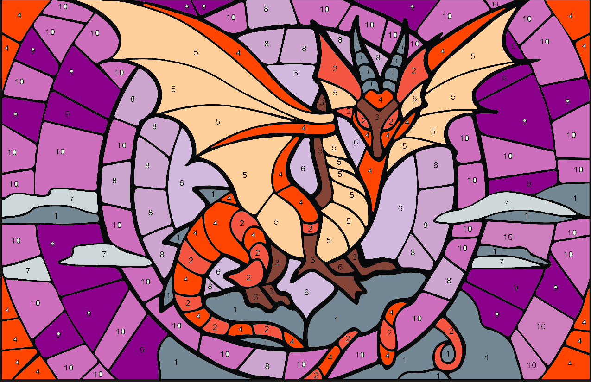
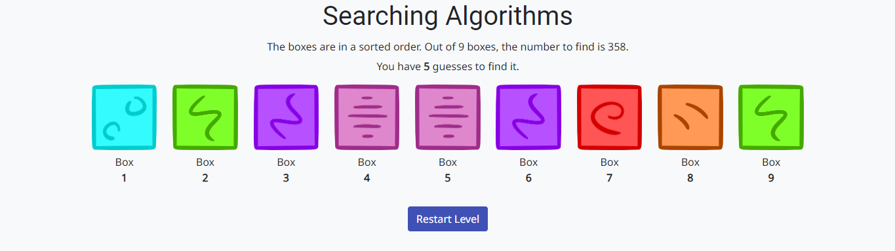
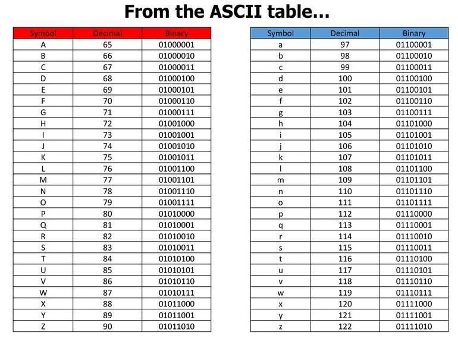

Computer Science

This is a dragon that I number coloured within the Binary and Hexadecimal topic.

This is the simulator that I used to conduct a Binary Search Algorithm.

This is a symbol to American Standard Code for Information Interchange (ASCII) to binary converting table.
Evaluation
This is where you put your evaluation. You should delete this and write about your learning. In CS, some softwares that we used included things such as the binary card simulator tool, algorithm simulators, etc. Mainly from CSFG. I learnt many skills. These skills vary from different sorting methods to learning the numbers of a barcode. I found this topic to be quite fun and educational, especially in things that we use everyday, such as a keyboard or barcodes on our bought products. I think that I learnt quite a lot, probably due to the large amounts of methods and strategies that computer use to do certain tasks.
I believe that I might potentially end up using some algorithms in my student-led project.